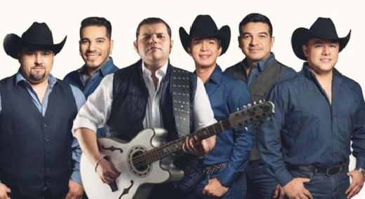
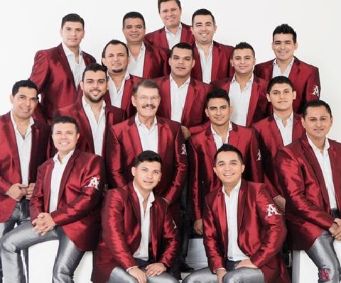

Before we get into the Regional Mexican music, I have to explain that there are many categories in the Regional Mexican genre. The main genre that you might have heard about is "Banda" and is the one that I will be focusing on. According to mexicanbanda.wordpress.com, Banda was created as an imitation of military bands in the 1860s. And as oxfordmusiconline.com states, "The main appeal of banda was, and continues to be, its danceable rhythms ranging from the local son, guaracha, polka, waltz, and schottische to the international fox trot, Cuban danzón, bolero, mambo, and cha-cha".
~~~~~~~~~~~~~~~~~~~~~~~~~~~~~~~~~~~~~~~~~~~~~~~~~~~~~~~~~~~~~~~~

Now that you all have a better idea of the genre, let me introduce the first band, Duelo.
Duelo is a band from Roma, Texas and puts flair to the Banda genre by mixing it with the Norteño style.
The website last.fm states that the group rose in
popularity in the late 1990s and continues to create albums. Their debut album, called "El Amor No Acaba"
was a major hit and allowed them to enter the Regional Mexican scene. Duelo continues to generate success
by having their songs played on the radio regularly, and generating listens on their Spotify account. Their
biggest hits on Spotify so far are "Puño de Diamantes", "Un Hombre Con Suerte", "Sentimientos De Carton",
"Malabres", and "Que Siga Lloviendo". The biggest hits on the radio are "Veneno", "Soy Como No Soy", and
"Puño de Diamantes".
~~~~~~~~~~~~~~~~~~~~~~~~~~~~~~~~~~~~~~~~~~~~~~~~~~~~~~~~~~~~~~~~

The next band that I will talk about is La Arrolladora Banda El Limón De René Camacho. The band is from
Sinaloa and had their first debut in 1997.
According to
allmusic.com, La Banda Arrolladora El Limón De René Camacho is "Comprised of over a dozen bandmembers,
the group performs a range of Mexican regional music including rancheras, corridos, ballads, and cumbias". The band continually
puts out albums, sometimes even more than one album per year. The band had their first ever billboard hit called "Más Adelante" in 2009,
and continues to grow in popularity. Their most popular songs as of right now on Spotify are "Ya Te Perdí La Fe", "Entre Beso Y Beso",
"Me Va Pesar", "Ya Es Muy Tarde", and "Mi Segunda Vida".
~~~~~~~~~~~~~~~~~~~~~~~~~~~~~~~~~~~~~~~~~~~~~~~~~~~~~~~~~~~~~~~~
The last artist that I'm mentioning here on my website is Espinoza Paz, who was born Isidro Chávez Espinoza in
La Angostura, Sinaloa, Mexico. He first gained popularity as being a songwriter for a popular vocalist named
El Coyote, who recorded Espinoza Paz's songs and made them hits in 2005 to 2006. This propelled his career as
a songwriter for many other famous artists like Jenny Rivera, Duelo, Chuy Lizarraga, El Chapo de Sinaloa, and
many others. The website allmusic.com
states that it wasn't until 2007 that Espinoza Paz decided to launch his own career as a singer. Espinoza Paz proved to be
a double threat because he was not only releasing his own chart-topping songs, but he was writing chart-topping songs for
other artists. Surprisingly, Espinoza Paz declared that he was retiring early in 2013, although he still made appearances
on duet singles like that with Gerardo Ortiz's "Te Pudiera Decir", Juan Luis Guerra's "Siempre en Mi Mente", and a few others.
In 2015 he released a solo track called "Perdí la Pose" was nominated for Song of the Year at the Latin Grammys.